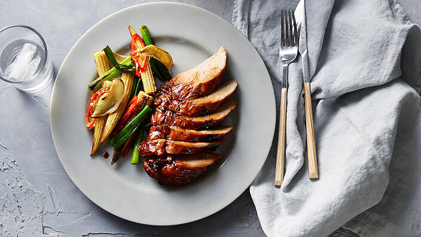
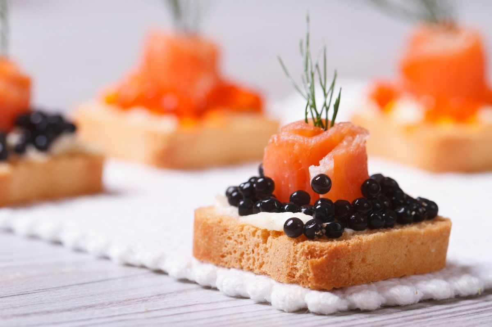
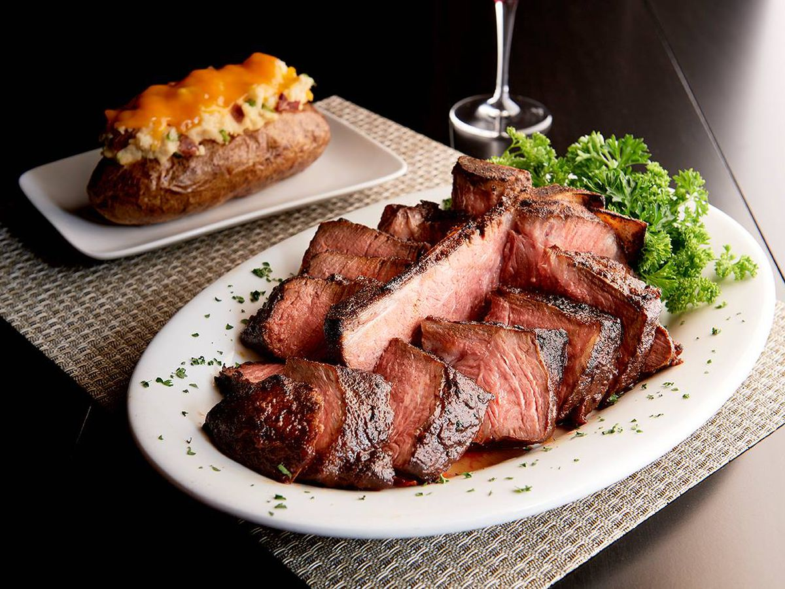

©2023 Smithsonian Restaurants | All Rights Reserved
While I haven’t been strictly vegetarian in a long time, I still hold petty grudges, grudges that I work out here in the form of the dishes I’d have preferred as options, over the mediocrity, the afterthought-ness, of most meatless entrees (gloopy pastas or vegetables cobbled together from sides from other dishes), sandwiches (cheese and sometimes soggy lettuce or tomato), and burritos (so much filler). A recent trip to a Tex-Mex chain left me surprised as not much had changed. And as I chewed down my football-sized wrap that was 80% rice, 15% beans, 5% salsa and cheese, my old resentment came back in full force.
I spend a possibly unhealthy amount of time … oh you thought I was going to say scrolling TikTok and watching other people clean their apartments? I mean, yes, that too. But I was going to say debating whether one *needs* a recipe for something I like to make, such as a salad. Doesn’t everyone just grab random things that need to be used up and assemble them with a dressing? Yet my other favorite thing on social media is when something appears in my feed that I didn’t know I was craving and I spontaneously must stop what I’m doing and kick all of my existing cooking plans to the curb to make it. What if this is the one that provides this for you?
A few months ago, and honestly not for the first or realistically the last time, my family betrayed me. It started, almost predictably, with the youngest. I made waffles one morning, so proud of myself for remembering to start the yeasted waffle batter, my favorite, the night before — and my daughter told me that she prefers the waffles at grandma’s house. “What kind does grandma make?” I asked. “They’re in the freezer,” she told me. “I think they say ‘egg’ on them?”
I think we all know where this was going. I was traveling a wee bit over the last few months and decided before a trip to surprise her with a giant box of Eggos in the freezer. When I got home at the end of the week, the whole box was gone. It turns out that it isn’t just my daughter who prefers them, it’s my son too, and even my husband. The treachery!A normal person who cooks might shrug and be at peace with having one less thing that needs to be made from scratch. I’m perfectly comfortable, for example, simply never making croissants at home. But waffles? I love homemade weekend morning waffles. So I did the less rational but very me thing and got very ssobsessed with cracking the code of homemade freezer waffles.
But there is a time and place for all vegetable cookery, and this is the one that really made me fall in love with what happens when broccoli is cooked until it begins to melt. What is key is that this is not the bland, soggy, boiled to death broccoli nightmare of someone’s childhood cafeteria or dinner at grandma’s house. [Justice for grandmothers, always, however, for feeding us ingrates anyway.] This is more silky, closer to braised, and has an elusive vegetable sweetness, a nod of vegetable confit, that only comes with the luxury of the unrushed.
I’ve been working up the courage to tell you about this dish for a few years. Why courage, you might ask? What’s courageous about the timeless combination of broccoli and pasta, Deb? It’s the cooking time. This broccoli is not al dente. It does not “retain a crunch,” “still have some bite to it,” or keep any of the verdant green hue it entered the pan with. And, even more audacious, it doesn’t wish to. This broccoli applies a philosophy of vegetable cooking times fairly polarized from our current moment, when the minutes we walk vegetables by the fire have plunged so far that some of us even advocate for eating cauliflower, asparagus, and even broccoli raw. [Or, in a twiston the words of a steak cooking chart I once saw on the wall of a restaurant in Texas: A good farmer could still save the vegetable.]
Welcome to the decadent meal I dream about every late December, when I want even simple foods to feel festive. Yes, I am seriously making the argument that baked brie should be a dinner dish. Or, if not dinner, maybe a luxe part of it, so perfect for this blustery, celebratory time of year. For dinner you might eat this with a big green salad and a cup of soup. You might set this out as a side dish with a big roast. You might put it out as part of a party spread too, an oasis of savory among all of the cookies and molten cakes.
We start with the Garlic Butter Roasted Mushrooms in the archives, the ones that I describe as giving mushrooms the “escargot” treatment which to say that they’re cooked in a not-insignificant amount of butter and garlic, then finished with lemon juice and a shower of parsley until they’re complex and wildly more delicious than it would seem so few ingredients could be. But why stop there? Once you nestle in a small brie (or camembert) at the end and let it warm up in the oven, there’s no looking back: you’re probably going to end up scooping it again and again onto toasted baguette slices and entirely forgetting to eat dinner — there really are no rules right now and I say we lean into it.